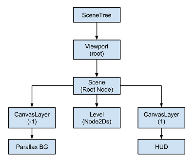

Canvas layers
Viewport and Canvas items
CanvasItem is the base for all 2D nodes, be it regular 2D nodes, such as Node2D, or Control. Both inherit from CanvasItem. You can arrange canvas items in trees. Each item will inherit its parent's transform: when the parent moves, its children move too.
CanvasItem nodes, and nodes inheriting from them, are direct or indirect children of a Viewport, that displays them.
The Viewport's property Viewport.canvas_transform, allows to apply a custom Transform2D transform to the CanvasItem hierarchy it contains. Nodes such as Camera2D work by changing that transform.
To achieve effects like scrolling, manipulating the canvas transform property is more efficient than moving the root canvas item and the entire scene with it.
Usually though, we don't want everything in the game or app to be subject to the canvas transform. For example:
Parallax Backgrounds: Backgrounds that move slower than the rest of the stage.
UI: Think of a user interface (UI) or head-up display (HUD) superimposed on our view of the game world. We want a life counter, score display and other elements to retain their screen positions even when our view of the game world changes.
Transitions: We may want visual effects used for transitions (fades, blends) to remain at a fixed screen location.
How to solve these problems in a single scene tree?
CanvasLayers
The answer is CanvasLayer, which is a node that adds a separate 2D rendering layer for all its children and grand-children. Viewport children will draw by default at layer "0", while a CanvasLayer will draw at any numeric layer. Layers with a greater number will be drawn above those with a smaller number. CanvasLayers also have their own transform and do not depend on the transform of other layers. This allows the UI to be fixed in screen-space while our view on the game world changes.
An example of this is creating a parallax background. This can be done with a CanvasLayer at layer "-1". The screen with the points, life counter and pause button can also be created at layer "1".
Here's a diagram of how it looks:

CanvasLayers are independent of tree order, and they only depend on their layer number, so they can be instantiated when needed.
Note
CanvasLayers aren't necessary to control the drawing order of nodes. The standard way to ensuring that a node is correctly drawn 'in front' or 'behind' others is to manipulate the order of the nodes in the scene panel. Perhaps counterintuitively, the topmost nodes in the scene panel are drawn on behind lower ones in the viewport. 2D nodes also have the CanvasItem.z_index property for controlling their drawing order.